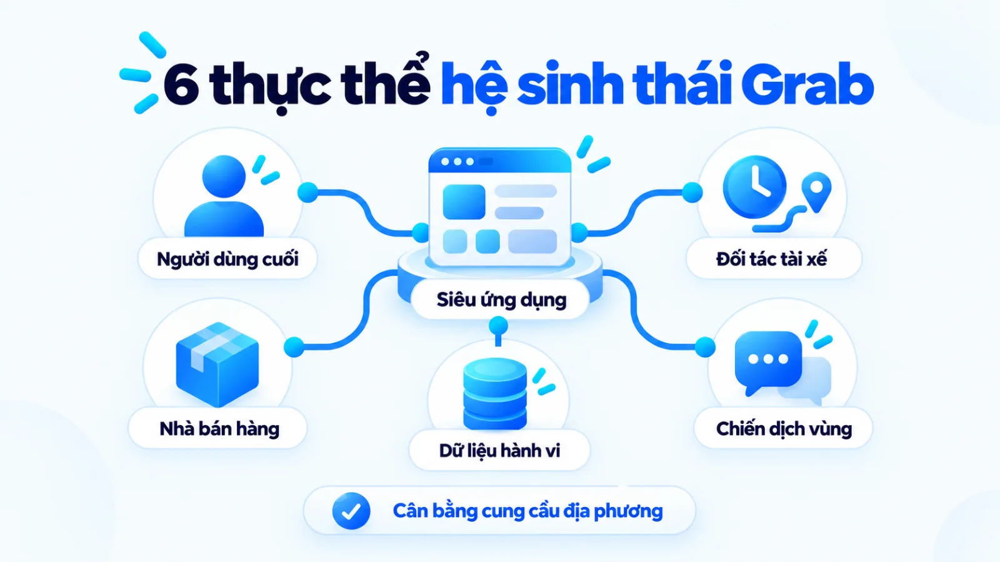
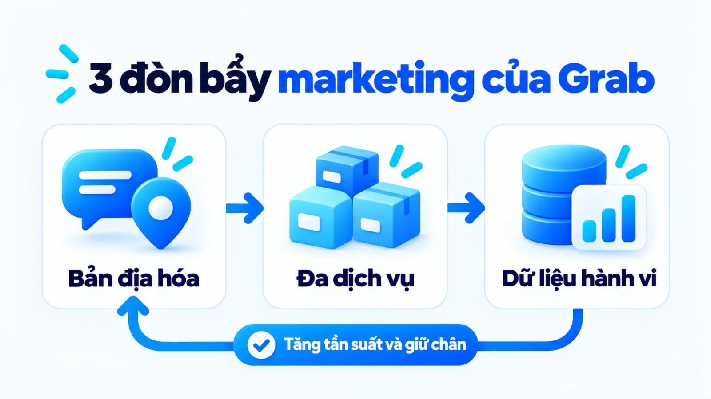
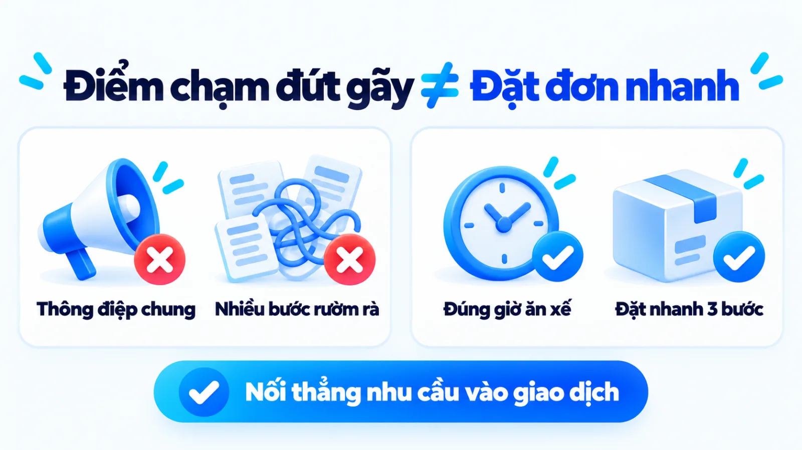
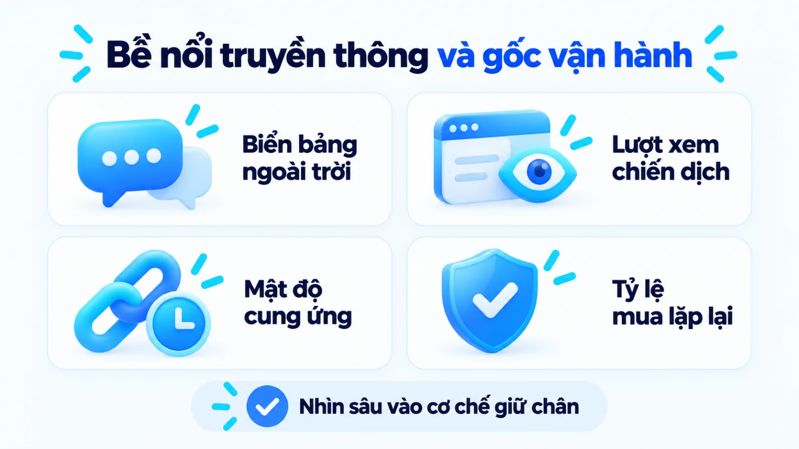
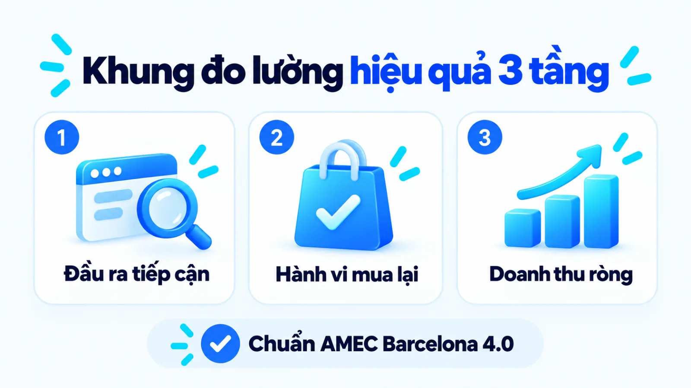
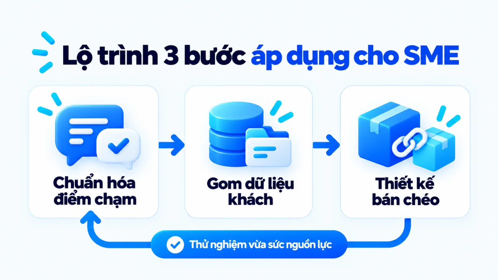
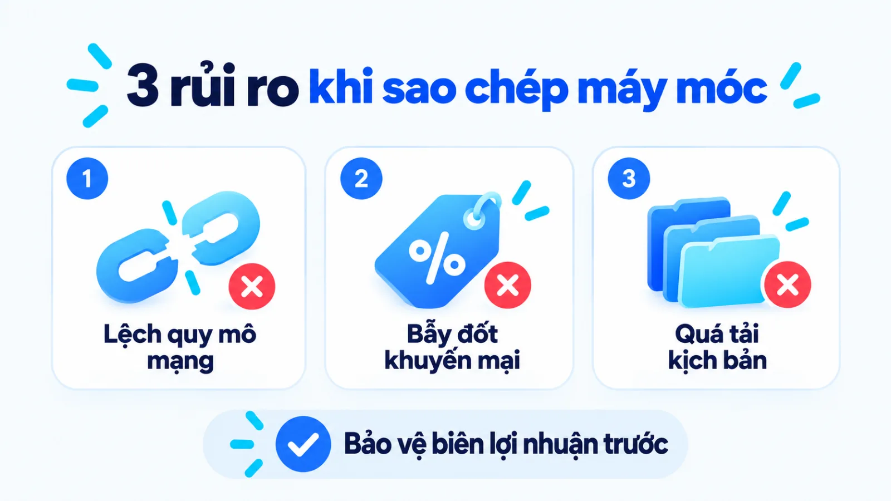

Chiến lược marketing của Grab, SME học được gì?
Chiến lược marketing của Grab là hệ thống quyết định dùng thông điệp bản địa hóa, điểm chạm đa dịch vụ và dữ liệu hành vi trên siêu ứng dụng để tăng tần suất giao dịch của người dùng, giữ chân tài xế và mở rộng đầu ra cho nhà bán hàng. Khi quan sát các đợt truyền thông lớn của một nền tảng đa bên, doanh nghiệp vừa và nhỏ rất dễ nhầm bề nổi chiến dịch với lợi thế hạ tầng và mật độ cung ứng phía sau. Nếu sao chép nguyên bản cách trợ giá khi chưa có sản phẩm mua lặp lại, ngân sách tiếp thị sẽ sớm cạn kiệt mà không giữ được khách hàng thực chất. Tôi là Lê Tuấn Việt, Marketing Leader tại TAKI Group. Trong bài viết này, tôi phân tích ranh giới giữa tiếp thị với bài toán kinh doanh của Grab, cơ chế phối hợp ba đòn bẩy cốt lõi và điều kiện để doanh nghiệp nhỏ chọn hướng thử nghiệm vừa sức.
- Đăng ngày
- Cập nhật

Tóm tắt nhanh
- Chiến lược marketing của Grab không tách rời mô hình nền tảng đa bên, nơi thông điệp địa phương và ưu đãi luôn gắn trực tiếp với thao tác giao dịch hàng ngày trên ứng dụng.
- Ba đòn bẩy tạo sức bật cho Grab gồm bản địa hóa theo ngữ cảnh đô thị, bán chéo qua hệ sinh thái siêu ứng dụng và phân nhóm người dùng dựa trên dữ liệu hành vi thực tế.
- Khi đọc số liệu case study của Grab, người làm marketing cần phân biệt chỉ số quy mô toàn tập đoàn với hiệu quả của từng chiến dịch tiếp thị theo khung đo lường ba tầng.
- Doanh nghiệp vừa và nhỏ có ngân sách hạn chế nên ưu tiên làm sắc thông điệp theo ngữ cảnh mua hàng và giảm ma sát tại điểm chạm trước khi mở rộng tự động hóa dữ liệu.
Mục lục bài viết8 phần
Chiến lược marketing của Grab là gì?
Chiến lược marketing của Grab là hệ thống quyết định dùng thông điệp bản địa hóa, điểm chạm đa dịch vụ và dữ liệu hành vi trên superapp (siêu ứng dụng) để tăng tần suất giao dịch của người dùng, giữ chân đối tác tài xế và mở rộng đầu ra cho nhà bán hàng.
Hồ sơ công khai cấp tập đoàn tại Đông Nam Á
Quy mô giao dịch của hệ sinh thái siêu ứng dụng Grab
Theo trang thông tin chính thức của Grab tại Việt Nam, hãng định vị là siêu ứng dụng phục vụ nhu cầu hàng ngày từ di chuyển, giao đồ ăn đến đi chợ và thanh toán. Trong báo cáo tài chính quý 4/2024 do Grab Holdings Limited công bố tháng 2/2025, On-Demand GMV (tổng giá trị hàng hóa và dịch vụ theo nhu cầu) toàn Đông Nam Á tăng 20% lên 5,0 tỷ USD, doanh thu tăng 17% đạt 764 triệu USD; số liệu cấp tập đoàn, chưa tách riêng Việt Nam.
- 20%
- Tăng giá trị giao dịch
- 17%
- Tăng doanh thu tập đoàn
- Đa dịch vụ
- Gọi xe, ăn uống, đi chợ

Khác biệt giữa chiến lược marketing và kinh doanh
Khi phân tích hồ sơ của một tập đoàn công nghệ, nhiều đội ngũ thường gộp chung các quyết định về mô hình thu phí, quản trị tài xế và mở rộng danh mục dịch vụ vào phần tiếp thị. Việc tách bạch hai tầng quyết định này giúp SME (doanh nghiệp vừa và nhỏ) nhìn đúng phần việc mà phòng marketing thực sự kiểm soát. Bảng dưới đây đối chiếu hai phạm vi theo ba tiêu chí cốt lõi.
| Tiêu chí | Chiến lược marketing của Grab | Chiến lược kinh doanh của Grab |
|---|---|---|
| Mục tiêu chính | Tăng nhận biết theo ngữ cảnh, kích hoạt đơn đầu và nâng tần suất mở ứng dụng | Tối ưu hiệu quả vốn, cân bằng cung cầu đa bên và mở rộng biên lợi nhuận chung |
| Phạm vi quyết định | Thông điệp địa phương, điểm chạm ứng dụng, phân nhóm ưu đãi và kênh truyền thông | Cấu trúc danh mục dịch vụ, thuật toán giá cước, chia sẻ doanh thu và hạ tầng |
| Chỉ số đầu ra | Tỷ lệ chuyển đổi đặt đơn, tần suất giao dịch lặp lại và chi phí thu hút khách | Tổng giá trị giao dịch, doanh thu thuần cấp tập đoàn và biên lợi nhuận hoạt động |
Lưu ý khi đọc bảng: các chỉ số quy mô như mức tăng 20% On-Demand GMV hay 17% doanh thu trong quý 4/2024 là kết quả tổng hợp của cả chiến lược kinh doanh, mật độ cung ứng và chính sách giá, không phải thành quả riêng của bộ phận quảng cáo. Người làm nghề cần giữ ranh giới này giống như khi đọc chiến lược marketing của Apple để không quy kết mọi tăng trưởng doanh số cho một vài thông điệp truyền thông.
Sáu thực thể tạo nên hệ thống marketing của Grab
Để một chiến dịch tiếp thị trên siêu ứng dụng vận hành trôi chảy, thông điệp không chỉ đi một chiều từ thương hiệu tới người mua lẻ. Sáu thực thể cốt lõi tạo nên hệ thống này gồm:
- Nền tảng siêu ứng dụng Grab: Trung tâm điều phối giao diện, hiển thị dịch vụ và ghi nhận mọi tương tác giao dịch theo thời gian thực.
- Người dùng cuối: Khách hàng có nhu cầu di chuyển, ăn uống, mua sắm hàng ngày tại từng khu vực đô thị cụ thể.
- Đối tác tài xế: Lực lượng thực thi vận chuyển trực tiếp, quyết định tốc độ đáp ứng đơn hàng và trải nghiệm điểm chạm vật lý.
- Đối tác nhà bán hàng: Hệ thống quán ăn, cửa hàng bách hóa và thương hiệu cung cấp hàng hóa, cùng tham gia đồng tài trợ khuyến mại.
- Hệ thống dữ liệu ứng dụng: Lớp ghi nhận vị trí, khung giờ, lịch sử đặt đơn và phương thức thanh toán để phục vụ phân nhóm khách.
- Chiến dịch địa phương: Các hoạt động truyền thông ngoài trời, mạng xã hội và kích hoạt tại điểm bán gắn với văn hóa từng thành phố.
Tôi luôn lưu ý các chủ doanh nghiệp nhỏ tách riêng phần truyền thông tiếp thị với lợi thế hạ tầng công nghệ khi đọc case study này. Một mẫu biển quảng cáo ngoài trời của Grab gây chú ý vì người xem đã có sẵn ứng dụng trong điện thoại và chỉ mất vài giây để đặt xe, trong khi doanh nghiệp nhỏ chưa có độ phủ điểm bán tương đương sẽ cần một hệ thống marketing tổng thể vừa sức hơn.
Ba đòn bẩy trong chiến lược marketing của Grab
Ba đòn bẩy cốt lõi tạo nên sức bật trong chiến lược marketing của Grab gồm bản địa hóa sâu theo ngữ cảnh sinh hoạt tại từng đô thị, tận dụng hệ sinh thái siêu ứng dụng để bán chéo dịch vụ và khai thác dữ liệu hành vi giao dịch thực tế nhằm cá nhân hóa ưu đãi.

Bản địa hóa theo nhu cầu và ngữ cảnh thị trường
Hyper-localization (bản địa hóa sâu theo địa phương) tại Grab không dừng ở việc dịch ngôn ngữ giao diện sang tiếng Việt, mà đi thẳng vào thói quen sinh hoạt, thời tiết và cách nói chuyện đời thường của người dân từng thành phố. Thay vì nói về công nghệ thuật toán phức tạp, thông điệp ngoài đường phố và trên mạng xã hội của hãng thường gọi đúng khoảnh khắc kẹt xe giờ tan tầm, cơn mưa bất chợt buổi chiều hoặc bữa trưa văn phòng cần giao nhanh.
Hệ sinh thái dịch vụ tạo nhiều điểm chạm
Khi người dùng đã cài đặt ứng dụng vì nhu cầu gọi xe có tần suất cao, Grab tận dụng ngay tập khách hàng đang hoạt động này để giới thiệu dịch vụ giao đồ ăn GrabFood, đi chợ hoặc thanh toán không tiền mặt. Cơ chế bán chéo trên siêu ứng dụng giúp hãng giảm đáng kể chi phí thu hút khách hàng mới cho từng dịch vụ ra đời sau.
Dữ liệu hỗ trợ phân nhóm và cá nhân hóa
Mỗi chuyến xe và đơn đặt món đều để lại tín hiệu first-party data (dữ liệu bên thứ nhất do doanh nghiệp trực tiếp thu thập) về khung giờ hoạt động, địa điểm thường đến và mức chi tiêu. Theo tài liệu giải pháp trên GrabAds Việt Nam, hệ thống tiếp thị trong ứng dụng của hãng tập trung kết nối thương hiệu với nhóm người tiêu dùng có tần suất tương tác và giao dịch thực tế hàng ngày với nhà bán hàng.
Trong hồ sơ năm 2024 trên Think with Google APAC, khi tối ưu chiến dịch ứng dụng vào nhóm người dùng giao dịch giá trị cao hàng ngày bằng dữ liệu bên thứ nhất và GA4 (Google Analytics 4), Grab tăng 19% nhóm người dùng này và giảm 9% CPA (chi phí thu hút mỗi khách hàng). Hồ sơ này đo tại thị trường Indonesia với Audience Triggers và Ads Data Hub, chưa tách số riêng cho Việt Nam. Bảng dưới đây đối chiếu ba đòn bẩy cho SME.
| Đòn bẩy cốt lõi | Cơ chế vận hành tại Grab | Điều kiện áp dụng cho SME |
|---|---|---|
| Bản địa hóa ngữ cảnh | Gắn thông điệp với thời tiết, khung giờ cao điểm và thói quen từng đô thị | Khách hàng tập trung theo khu vực hoặc có tình huống phát sinh nhu cầu rõ |
| Bán chéo hệ sinh thái | Chuyển người dùng từ dịch vụ gọi xe tần suất cao sang giao đồ ăn và đi chợ | Sản phẩm đầu phễu có chất lượng ổn định và có sản phẩm bổ trợ mua lặp lại |
| Phân nhóm dữ liệu | Dùng lịch sử giao dịch thực tế trên ứng dụng để tối ưu nhóm khách giá trị cao | Có quy trình ghi nhận lịch sử đơn hàng tối thiểu 3 đến 6 tháng trên phần mềm |
Giới hạn khi đọc bảng: hiệu quả bán chéo và cá nhân hóa tại Grab được nâng đỡ bởi tần suất mở ứng dụng hàng ngày, trong khi phần lớn SME kinh doanh sản phẩm có chu kỳ mua lại thưa hơn từ vài tuần đến vài tháng. Nếu doanh nghiệp nhỏ muốn tìm hiểu sâu hơn về mặt kỹ thuật phân phối nội dung tự động, bài viết về cá nhân hóa bằng AI sẽ giải thích rõ ranh giới giữa quy tắc thủ công và thuật toán máy học.
Cách chiến dịch của Grab chuyển hóa chiến lược
Mỗi chiến dịch marketing của Grab chuyển hóa chiến lược tổng thể bằng cách xuất phát từ một rào cản hoặc thói quen sinh hoạt cụ thể tại địa phương, nối thông điệp truyền thông trực tiếp vào thao tác đặt dịch vụ trên ứng dụng và đo lường bằng hành vi giao dịch hoàn tất.
Thay vì chạy các đợt quảng cáo chỉ để lấy lượt xem, cấu trúc triển khai của hãng luôn buộc truyền thông đại chúng phải phục vụ trực tiếp cho chuyển đổi trong ứng dụng. Bốn bước chuyển hóa chiến lược thành chiến dịch thực thi gồm:
- IChốt mục tiêu hành viXác định rõ thói quen cần thay đổi và khung giờ cần kích cầu tại từng khu vực.
- IIĐặt thông điệp đúng lúcĐưa ngôn ngữ địa phương lên biển bảng và mạng xã hội ngay khi khách phát sinh nhu cầu.
- IIINối thẳng vào ứng dụngĐồng bộ thông điệp bên ngoài với giao diện đặt đơn và năng lực phục vụ tại điểm bán.
- IVĐo giao dịch hoàn tấtTheo dõi số đơn thành công, tần suất mua lại và chi phí thu hút mỗi khách giao dịch.

Mục tiêu và insight đứng trước lựa chọn kênh
Trong nhiều bản đề xuất chiến dịch của doanh nghiệp nhỏ, đội ngũ thường bắt đầu bằng câu hỏi nên quay video ngắn hay chạy quảng cáo hiển thị trước khi làm rõ khách hàng đang vướng ở đâu. Ngược lại, cách tiếp cận từ mục tiêu hành vi đòi hỏi phải xác định rõ phân khúc nào đang có nhu cầu nhưng chưa đặt đơn: nhóm khách hàng văn phòng ngại phí giao hàng buổi chiều hay nhóm người dùng mới chỉ đi xe mà chưa từng thử đặt đồ ăn.
Thông điệp địa phương nối với trải nghiệm dịch vụ
Một biển bảng đường phố chỉ hoàn thành nửa đầu công việc; nửa còn lại nằm ở việc giao diện ứng dụng hiển thị đúng dịch vụ khớp lời mời gọi đó. Trong hồ sơ Think with Google APAC năm 2024 tại Indonesia, Grab nối thông điệp trên kênh quảng cáo ứng dụng với tín hiệu giao dịch thực tế trên GA4 để tiếp cận nhóm người dùng giá trị cao hàng ngày, giúp tăng 19% nhóm này và giảm 9% CPA, dù chưa tách số riêng cho Việt Nam.
Ví dụ biên tập, không phải kết quả khách hàng thật: một chuỗi cà phê và bánh ngọt tại Thành phố Hồ Chí Minh muốn tăng đơn giao buổi xế chiều cho giới văn phòng lân cận. Cách làm sai là chạy quảng cáo chung chung về hương vị hạt cà phê trên toàn thành phố rồi dẫn về trang chủ tĩnh. Cách làm đúng trong ví dụ biên tập này là hiển thị thông điệp nhắc đúng giờ ăn xế cho các tòa nhà quanh quán, bấm vào mở ngay gói trà bánh đặt nhanh. Nối điểm chạm quan trọng hơn độ ồn truyền thông.
Tách kết quả chiến dịch khỏi nhận định thương hiệu
Khi theo dõi các bài tổng hợp về những đợt truyền thông lớn hoặc chương trình tri ân kỷ niệm nhiều năm hoạt động của Grab trên báo chí, người đọc thường thấy những lời khen ngợi về độ phủ sóng và sự sáng tạo. Tuy nhiên, dưới góc nhìn quản trị hiệu suất, thông cáo truyền thông công khai chủ yếu cung cấp số liệu về quy mô hoạt động bề nổi, còn tỷ lệ giữ chân khách hàng sau khi ngắt mã khuyến mại hay biên lợi nhuận ròng của từng chiến dịch là dữ liệu nội bộ chưa được xác nhận.
Vì vậy, khi xây dựng chiến lược Digital Marketing cho doanh nghiệp mình, bạn không nên lấy việc một thương hiệu lớn xuất hiện dày đặc trên mạng xã hội làm bằng chứng rằng cách làm đó đang mang lại lợi nhuận trực tiếp. Mọi ý tưởng học hỏi từ bên ngoài đều phải được đưa qua bộ lọc chỉ số đo lường trước khi mở rộng ngân sách.

Hiệu quả marketing của Grab nên đo bằng gì?
Hiệu quả marketing của Grab cần được đánh giá qua khung đo lường ba tầng từ tín hiệu tiếp cận ban đầu, hành vi giao dịch đạt chuẩn trên ứng dụng cho đến tác động kinh doanh dài hạn, thay vì chỉ nhìn vào lượt xem hay độ rầm rộ trên mạng xã hội.
Theo nguyên tắc Barcelona Principles 4.0 do Hiệp hội AMEC công bố tháng 6/2025, hệ thống đánh giá truyền thông và marketing cần báo cáo tách bạch ba lớp gồm Outputs (chỉ số đầu ra), Outcomes (kết quả thay đổi hành vi) và Impact (tác động tổ chức). Áp dụng khung này giúp SME tránh bẫy lấy tương tác thay cho doanh thu. Bảng dưới đây trình bày chi tiết từng tầng đo lường.
| Tầng đo lường | Chỉ số và nguồn dữ liệu | Giới hạn khi đọc số liệu |
|---|---|---|
| Tầng 1: Tương tác | Lượt hiển thị, tỷ lệ nhấp vào banner hoặc thông báo đẩy từ trình quảng cáo | Chỉ phản ánh mức độ chú ý ban đầu, chưa chứng minh được nhu cầu mua thực tế |
| Tầng 2: Hành vi chuẩn | Số người dùng giao dịch giá trị cao hàng ngày, tần suất đặt lại và chi phí CPA | Phản ánh hiệu quả chuyển đổi chiến dịch nhưng vẫn chịu tác động bởi trợ giá |
| Tầng 3: Doanh thu | Tổng giá trị giao dịch, doanh thu thuần và lợi nhuận ròng trên báo cáo kế toán | Chịu tác động đồng thời của nguồn cung tài xế, thời tiết, giá cước và mùa vụ |
Lưu ý giới hạn quy kết sau bảng: không nên lấy trực tiếp chỉ số Tầng 1 như lượt xem video để giải trình cho sự tăng giảm của Tầng 3 khi chưa đi qua dữ liệu hành vi ở Tầng 2, và mọi phép so sánh đều phải giữ nguyên cùng một kỳ đo cùng định nghĩa mẫu số.

Tín hiệu tương tác và mức độ tiếp cận
Ở tầng đầu tiên, các chỉ số như số lượt hiển thị biển bảng, lượt thảo luận trên mạng xã hội hay tỷ lệ mở thông báo đẩy cho biết thông điệp bản địa hóa có chạm đúng sự chú ý của người dùng hay không. Nếu chỉ số Tầng 1 cao nhưng tỷ lệ chuyển sang thao tác tìm kiếm dịch vụ ở Tầng 2 thấp, nguyên nhân thường nằm ở việc thông điệp bên ngoài hứa hẹn quá đà hoặc lệch khỏi nhu cầu thực tế trên trang đích.
Hành vi sử dụng dịch vụ và chuyển đổi đạt chuẩn
Tầng thứ hai là nơi phản ánh rõ nhất năng lực thực thi của đội ngũ marketing. Thay vì đếm tổng lượt tải ứng dụng chung chung, việc Grab tối ưu vào nhóm người dùng giao dịch giá trị cao hàng ngày để đạt mức tăng 19% và giảm 9% CPA trong hồ sơ Think with Google APAC năm 2024 tại Indonesia là minh chứng điển hình cho cách chọn chỉ số Tầng 2 có chất lượng.
Tôi ưu tiên đặt trọng tâm quản trị của phòng marketing vào các chỉ số hành vi đạt chuẩn ở Tầng 2 này, bởi đây là điểm giao thoa trực tiếp giữa thông điệp quảng cáo và chất lượng khách hàng bàn giao cho khâu bán hàng. Trong trường hợp chỉ số hành vi Tầng 2 tăng nhưng doanh thu Tầng 3 đứng yên, người phụ trách cần kiểm tra ngay xem chương trình ưu đãi có đang kéo về tệp khách chỉ săn hàng giảm giá một lần rồi rời bỏ hay không.
Kết quả kinh doanh và giới hạn quy kết
Trong dự án cố vấn Marketing cho Uyên Uyên Mart (tháng 5/2025 đến tháng 5/2026) do tôi phụ trách, việc góp phần tăng 45% lượt khách đến cửa hàng và nâng doanh thu toàn hệ thống từ 3 lên 6 tỷ đồng mỗi tháng (tăng 100% so với cùng kỳ) đòi hỏi phối hợp đồng bộ giữa truyền thông thu hút với chuẩn hóa hàng hóa tại điểm bán. Hiểu giới hạn quy kết giúp người lập kế hoạch marketing đặt mục tiêu trung thực.
SME có thể áp dụng bài học nào từ Grab?
Doanh nghiệp vừa và nhỏ nên học cách Grab gọi đúng ngữ cảnh phát sinh nhu cầu của khách hàng địa phương và thiết kế lộ trình mua lại từ sản phẩm đầu phễu, thay vì sao chép mô hình đốt tiền khuyến mại hay đầu tư hệ thống dữ liệu phức tạp ngay từ đầu.
Câu hỏi tự phản biện mà mọi chủ doanh nghiệp cần đặt ra trước khi học theo tập đoàn lớn là: nếu ngày mai cắt toàn bộ mã giảm giá, khách hàng còn lý do gì để quay lại với mình? Để trả lời câu hỏi đó theo đúng điều kiện thực tế, bảng bản đồ quyết định dưới đây chia lộ trình áp dụng thành ba mức nguồn lực.
| Mức nguồn lực | Việc ưu tiên làm trước | Điều kiện và chỉ số kiểm tra |
|---|---|---|
| Ngân sách, dữ liệu ít | Chuẩn hóa thông điệp theo ngữ cảnh địa phương và rút ngắn bước đặt đơn hàng | Thử nghiệm trong 4 tuần, đo tỷ lệ chuyển đổi từ tin nhắn sang đơn hoàn tất |
| Đã có tập khách quen | Gom dữ liệu lịch sử đơn hàng vào một nơi và phân nhóm theo tần suất mua lại | Có tối thiểu 300 đến 500 khách cũ, đo tỷ lệ mua lại sau kịch bản nhắc nhớ |
| Vận hành đa sản phẩm | Thiết kế gói sản phẩm bán kèm hoặc dịch vụ kế tiếp ngay sau giao dịch đầu | Sản phẩm chính vận hành ổn định, đo giá trị đơn trung bình và lợi nhuận gộp |
Điều kiện đọc bảng: doanh nghiệp chỉ nên bước sang giai đoạn mở rộng bán chéo hoặc tự động hóa khi giai đoạn trước đó đã có quy trình bàn giao đơn hàng ổn định và đo được chi phí thu hút thực tế.

Ưu tiên khi ngân sách và dữ liệu còn ít
Khi ngân sách tiếp thị hàng tháng còn hẹp và chưa có đội ngũ phân tích dữ liệu riêng, việc hiệu quả nhất SME có thể làm ngay là rà soát lại toàn bộ điểm chạm từ lúc khách nhìn thấy quảng cáo đến lúc chốt đơn. Hãy chọn một khu vực địa lý hẹp hoặc một nhóm khách hàng có tình huống sử dụng sản phẩm rõ ràng nhất để viết thông điệp cụ thể, đồng thời duy trì giọng thương hiệu nhất quán trên mọi kênh tư vấn.
Mở rộng khi đã có dữ liệu và năng lực vận hành
Khi doanh nghiệp đã tích lũy được danh sách khách hàng mua hàng thực tế qua nhiều tháng, đây là lúc áp dụng tư duy phân nhóm giá trị cao tương tự cách Grab khai thác dữ liệu trên siêu ứng dụng. Bạn không cần hệ thống máy học phức tạp, mà có thể phân loại khách hàng trên phần mềm quản lý bán hàng theo ba tiêu chí: lần mua gần nhất, tổng số lần mua và mức chi tiêu trung bình.
Từ bảng phân nhóm đó, đội ngũ thiết kế các lịch nhắc mua lại hoặc ưu đãi bán kèm sản phẩm bổ trợ đúng vào chu kỳ tiêu dùng tự nhiên của khách. Khi muốn tự động hóa luồng phân loại và gửi tin nhắn chăm sóc này để tiết kiệm nhân sự, bạn có thể tham khảo cách thiết kế luồng công việc có AI có điểm kiểm duyệt của con người.
Dấu hiệu cần dừng hoặc điều chỉnh thử nghiệm
Mọi thử nghiệm học từ case study đều phải đi kèm ngưỡng cắt lỗ và điều kiện dừng rõ ràng trước khi bấm nút chạy. Nếu sau một chu kỳ thử nghiệm chương trình kích cầu theo ngữ cảnh địa phương mà chi phí thu hút khách hàng mới vẫn vượt quá biên lợi nhuận gộp của cả vòng đời mua lại, đội ngũ bắt buộc phải dừng lại để mổ xẻ nguyên nhân.
Giới hạn và rủi ro khi sao chép chiến lược Grab
Sao chép nguyên bản chiến lược marketing của Grab dễ đẩy doanh nghiệp vừa và nhỏ vào bẫy thâm hụt dòng tiền vì thiếu hiệu ứng mạng hai chiều, thiếu tần suất sử dụng tự nhiên hàng ngày và thiếu hạ tầng dữ liệu đủ lớn để bù đắp chi phí khuyến mại.
Trước khi phê duyệt bất kỳ kế hoạch nào lấy cảm hứng từ các siêu ứng dụng, người phụ trách marketing cần đối chiếu thẳng thắn những khác biệt về cấu trúc mô hình kinh doanh. Ba nhóm rủi ro phổ biến cần chẩn đoán sớm gồm:
- Lệch quy mô nền tảng: Grab phân bổ chi phí thu hút qua nhiều dịch vụ hàng ngày, còn doanh nghiệp nhỏ bán sản phẩm lẻ cần dừng ngay nếu chi phí thu hút vượt lợi nhuận gộp đơn đầu.
- Bẫy khuyến mại ngắn hạn: Giảm giá liên tục chỉ hút tệp khách nhạy giá săn ưu đãi, cần kiểm tra tỷ lệ khách mua lại lần hai ở mức giá thường sau khi ngắt mã giảm.
- Quá tải cá nhân hóa: Chia nhỏ quá nhiều kịch bản khi cỡ mẫu dữ liệu còn mỏng làm quá tải nhân sự, cần theo dõi tỷ lệ lỗi dữ liệu và tỷ lệ hủy nhận tin trước khi mở rộng.

Phụ thuộc vào quy mô nền tảng và hiệu ứng mạng
Lợi thế cạnh tranh cốt lõi của siêu ứng dụng nằm ở hiệu ứng mạng hai chiều: càng nhiều người dùng đặt dịch vụ thì càng thu hút nhiều tài xế và quán ăn tham gia; ngược lại, mật độ tài xế và quán ăn càng dày thì thời gian chờ càng ngắn và chi phí phục vụ trên mỗi đơn càng giảm. Quy mô On-Demand GMV hàng tỷ USD mỗi quý cấp tập đoàn cho phép Grab dàn trải chi phí công nghệ và tiếp thị trên hàng triệu giao dịch mỗi ngày.
Ngược lại, một doanh nghiệp thương mại hoặc dịch vụ quy mô vừa thường có chi phí biến đổi trên từng đơn hàng cố định và danh mục sản phẩm hẹp. Nếu SME bắt chước chiến thuật phủ truyền thông diện rộng để lấy thị phần nhanh khi năng lực cung ứng và dòng tiền dự phòng chưa đủ dày, doanh nghiệp sẽ cạn vốn lưu động trước khi kịp tạo ra thói quen mua lặp lại.
Khuyến mại có thể tạo hành vi ngắn hạn
Trong dự án cố vấn Marketing cho Hệ thống Y Đa khoa TOMEC (tháng 8/2025 đến tháng 8/2026) do tôi phụ trách, kết quả tăng 40% khách hàng tiềm năng và giảm 54% CPL (chi phí trên mỗi khách hàng tiềm năng, từ 1,2 triệu xuống 550.000 đồng mỗi data) đến từ việc làm rõ nhu cầu khám theo nhóm đối tượng và tối ưu luồng tư vấn thay vì khuyến mại đại trà. Khác biệt nằm ở chất lượng nhu cầu đầu vào.
Cá nhân hóa cần dữ liệu, quyền riêng tư và kiểm soát
Việc cá nhân hóa thông báo và ưu đãi theo hành vi thời gian thực đòi hỏi dữ liệu sạch, sự đồng thuận cho phép thu thập dữ liệu của người dùng và hệ thống kiểm soát tần suất gửi tin chặt chẽ. Ngay cả khi sử dụng các công cụ hiện đại, nếu dữ liệu đầu vào bị phân mảnh hoặc gắn nhãn sai, hệ thống tự động sẽ gửi nhầm thông điệp tới sai người và gây phản cảm cho khách hàng.
Đối với doanh nghiệp vừa và nhỏ đang bắt đầu ứng dụng công nghệ để phân tích hành vi hoặc gợi ý nội dung, người phụ trách cần nắm vững nguyên tắc kiểm chứng dữ liệu và phòng tránh ảo giác AI trong marketing. Bạn chỉ nên mở rộng số lượng kịch bản cá nhân hóa khi đã có người chịu trách nhiệm kiểm soát chất lượng đầu ra và tuân thủ nghiêm ngặt quy định bảo mật thông tin khách hàng.
Câu hỏi thường gặp về chiến lược marketing của Grab
Ngân sách nhỏ có áp dụng được chiến lược marketing của Grab không?
Có, nếu doanh nghiệp chỉ chọn lọc phần tư duy bản địa hóa thông điệp theo ngữ cảnh mua hàng và tối ưu điểm chạm chuyển đổi thay vì sao chép cách phủ biển bảng. Với ngân sách nhỏ, bạn nên tập trung vào một khu vực địa lý hẹp hoặc một khung giờ phát sinh nhu cầu rõ nhất để thử nghiệm thông điệp sát thực tế. Hiệu quả cần được đo qua chi phí trên mỗi đơn hàng thành công và tỷ lệ khách quay lại lần hai.
Khi nào doanh nghiệp nhỏ nên dừng khuyến mại kích cầu kiểu Grab?
Không nên duy trì khuyến mại khi dữ liệu cho thấy nhóm khách dùng mã giảm giá không quay lại mua lần hai ở mức giá bình thường sau một đến hai chu kỳ mua hàng. Khác với siêu ứng dụng có nhiều dịch vụ thiết yếu mỗi ngày để thu hồi vốn, doanh nghiệp bán sản phẩm đơn lẻ rất dễ lỗ gộp nếu trợ giá kéo dài. Thay vì giảm giá trực tiếp trên đơn đầu, bạn nên tặng quyền lợi cho lần mua tiếp theo để kiểm tra nhu cầu thực chất.
Doanh nghiệp chưa có ứng dụng riêng thì thu thập dữ liệu ở đâu?
Có thể thu thập ngay trên hệ thống quản lý bán hàng, phần mềm quản trị quan hệ khách hàng, lịch sử tin nhắn tư vấn và Google Analytics 4 trên website mà không cần làm ứng dụng riêng. Ở giai đoạn đầu, đội ngũ chỉ cần theo dõi chuẩn xác ba trường dữ liệu gồm sản phẩm đã mua, khoảng cách thời gian giữa hai lần mua và giá trị đơn trung bình. Ba thông số này đã đủ cơ sở để phân nhóm khách hàng và thiết lập kịch bản nhắc mua lại đúng lúc.
Làm sao biết chiến dịch bản địa hóa thực sự tạo ra đơn hàng?
Có thể xác minh bằng cách gắn mỗi điểm chạm hoặc thông điệp địa phương với một mã ưu đãi riêng, đường dẫn có tham số theo dõi nguồn hoặc trang đích tách biệt theo khu vực. Sau kỳ thử nghiệm, người phụ trách đối chiếu số đơn hàng hoàn tất và doanh thu thực thu từ nhóm khách đó với mức cơ sở trước chiến dịch. Nếu chỉ có lượt bình luận tăng mà đơn hàng hoàn tất đứng yên thì thông điệp mới dừng ở mức gây chú ý bề nổi.
Marketing siêu ứng dụng khác gì marketing bán lẻ thông thường?
Khác biệt cốt lõi nằm ở việc siêu ứng dụng phải điều phối đồng thời cả người mua lẫn đối tác cung ứng như tài xế, quán ăn và tận dụng tần suất mở ứng dụng hàng ngày để bán chéo dịch vụ. Trong khi đó, doanh nghiệp bán lẻ hoặc dịch vụ độc lập thường chỉ kiểm soát một phía cung ứng và phải tự gánh toàn bộ chi phí thu hút khách hàng trên danh mục sản phẩm hẹp hơn. Vì vậy, bài toán sống còn của bán lẻ là biên lợi nhuận trên từng đơn và tỷ lệ giữ chân khách.
Có nên sao chép cách bắt xu hướng mạng xã hội của Grab không?
Không nên sao chép nguyên bản cách pha trò hay bắt trào lưu nếu ngành hàng của bạn đòi hỏi sự tin cậy chuyên môn cao như y tế, tài chính hoặc dịch vụ doanh nghiệp. Doanh nghiệp nhỏ chỉ nên học cách quan sát tình huống đời thường gần gũi với khách hàng mục tiêu để đưa vào nội dung. Mọi bài đăng theo xu hướng đều phải nối về một lợi ích sử dụng sản phẩm cụ thể, tránh làm nội dung giải trí tách rời khỏi định vị thương hiệu.
Kết luận
Giá trị cốt lõi từ chiến lược marketing của Grab dành cho doanh nghiệp vừa và nhỏ không nằm ở quy mô ngân sách quảng cáo hay các đợt tung mã khuyến mại, mà ở kỷ luật nối chặt thông điệp đúng ngữ cảnh địa phương với trải nghiệm giao dịch thuận tiện và hệ đo lường dựa trên hành vi thực chất. Ngay trong tuần này, bạn có thể rà soát lại một điểm chạm chủ lực: thông điệp quảng cáo đã gọi đúng tình huống phát sinh nhu cầu chưa và khách mất bao nhiêu bước để hoàn tất đơn đầu.
Khi bài toán của doanh nghiệp không còn dừng ở việc sửa một mẫu quảng cáo lẻ mà cần kết nối đồng bộ giữa định vị, danh mục sản phẩm bán kèm và hệ thống đo lường ba tầng trên toàn phễu, bạn có thể tham khảo thêm các bài phân tích trong chuyên mục Dự án và bài học. Đội ngũ của bạn đang vướng ở khâu thu hút khách đúng ngữ cảnh địa phương hay ở bước giữ chân khách mua lại sau giao dịch đầu tiên?